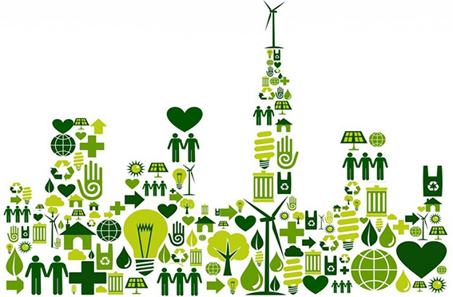

Sustentabilidad
Economías Solidarias

Muchas veces creemos que nuestras ganancias están en el sueldo a fin de mes, pero no es así o –al menos- muchos ya iniciaron el camino para que no sea tan así. No se trata de desbarrancar –del todo- al capitalismo, pero sí de encontrar alternativas que no necesiten del dinero como medio de intercambio o que ese dinero no sea más que una herramienta para lograr que ese canje se lleve a cabo… lo que se dice una forma diferente de pensar la plata.
Después de todo, todos tenemos algo para ofrecer y esa es la premisa que encontraron varios grupos para lanzar los distintos sitios de comercialización.
Hay experiencias desde el mutualismo, el cooperativismo y la autogestión; hasta lugares de trueque, economías sin dineros o sitios donde la economía sea un intercambio justo entre productores y consumidores…
Acá sólo podemos brindar un pequeño pantallazo de algunos, pero hay un montón de lugares donde poder hacer real otra economía más solidaria.
Bioecon es uno de ellos. Desde esta plataforma web se propulsa un sitio para dar y recibir desde objetos materiales y comidas, hasta saberes y servicios… y sin utilizar dinero. ¿Cómo? Mediante puntos o canje… o por el simple placer de compartir.
La cooperativa de trabajo Colectivo Solidario ofrece la logística para garantizar que los productos de Economías Solidarias de todo el país (fábricas recuperadas, cooperativas de trabajo etc) logren llegar al mercado con sus productos.
La Red Global de Trueque desde 1995 ofrece -además de intercambio de mercancías y saberes- capacitación y desarrollo de modelos para el intercambio de bienes, servicios y conocimientos… sin dinero.
En Mercado Punto Verde proponen un intercambio justo, sin especulación, donde productores y consumidores pueden interactuar de forma responsable con uno, con los demás y con el medio que nos rodea.
Todas estas economías comparten un mismo valor: las cosas valen por el trabajo que hay detrás de ellas y no por las ganas de poseerlas…
BIOECON
Qué se puede hacer: Se puede solucionar desde la canasta de alimentos o ayudar a pasar una crisis de desempleo, hasta realizar un emprendimiento mediano o a escala industrial.
Quiénes pueden ingresar: Cualquier persona que tenga algo que ofrecer (una cosa, un conocimiento o una actividad) y necesitar algo. Hay que tener ganas de participar dentro de esta economía pensando en todos y no simplemente en uno.
Cómo se puede participar:
1) Dar libremente y recibir libremente de la comunidad.
2) Intercambiar directamente un objeto, conocimiento u actividad con los de otro.
3) Usar puntos cuando ofertas y necesidades entre dos partes no coinciden.
Qué los diferencia del mercado convencional: Se maneja con puntos en lugar de dinero. Los puntos son un medio y no pueden ser un fin. No se pueden acumular ni ahorrar. Cuando eso sucede los puntos se oxidan y ya no sirven.
Ingresá en www.bioecon.net y enterate más…
Colectivo Solidario
Qué promueven: Generar canales de comercialización alternativos para que los pequeños productores autogetivos (fábricas recuperadas, cooperativas) lleguen a los consumidores… y que los consumidores compren de forma responsable.
Qué productos ofrecen: Quesos, tapas de empanadas y tartas, panificados, pastas secas y frescas, yerbas, conservas, productos de almacén, de limpieza, verduras agroecológicas, fiambres, condimentos, aceites, semillas y más.
Por qué es consumo solidario: Pocas veces nos detenemos a pensar quiénes y de qué manera producen los bienes que adquirimos. El consumo solidario revierte esa lógica, apela a ser responsables por lo que consumimos.
Cómo adquirir los productos: Mediante envíos a domicilio, en el Mercado Solidario de Bonpland, Ferias, bares, facultades y centros culturales ya adheridos.
Para recibir el listado de productos pedí el newsletter semanal a comunicacion@colectivosolidario.org
Punto Verde
Cuál es el objetivo: Ofrecer de forma directa al consumidor una posibilidad diferente a la industrial y sin intermediaros… un espacio de intercambio directo entre productores y consumidores responsables.
Cómo se manejan: Este espacio es cooperativo, libre y autogestivo. La única limitante es espacial ya que es un lugar bastante reducido… pero se intenta sumar todo lo que pueda serle de interés y utilidad al consumidor responsable.
Qué se puede conseguir:Productos comestibles caseros, saludables y artesanales. Y también cosmética natural; productos de limpieza biodegradables; pañales no descartables, portabebés, remeras para amamantar y ropa artesanal.
Quiénes pueden participar: Productores de alimentos sin agregados sintéticos y artesanos que tengan una afinidad por el concepto del reuso y el reciclaje o de materiales alternativos… el cuidado del entorno natural y social.
Para saber más: http://www.mercadopuntoverde.com.ar
Red Global de Trueque
Cómo funciona: Los intercambios en la RGT se realizan entre "prosumidores": usuarios que deben ofrecer y demandar en la misma medida. No hay dinero de por medio.
Para qué sirve: Este tipo de intercambio rescató a cientos de empresas en situación de convocatoria de acreedores o quiebra. Pero además, la RGT es un lugar para estrechar vínculos comunitarios y reforzar la inclusión.
Dónde: Centro de Capacitación para prosumidores y coordinadores: Humberto Primo 978 PB "A" los sábados de 18 a 20. Club de Trueque de La Boca: coordinadora Cristina, Cel: 1533079817 los jueves por la tarde.
Cuál es su objetivo: "Alfabetizar económicamente" y acompañar a los emprendedores para la puesta a punto de sus productos y proyectos ya sean alimentarios, de indumentaria, de servicios para el hogar, vivienda, turismo etc.
Curiosidad: Se creó tomando los principios de autoayuda de "Alcohólicos Anónimos": que cada participante se sienta más autónomo… la autosuficiencia genera autoestima y neutraliza la desazón y el desánimo.